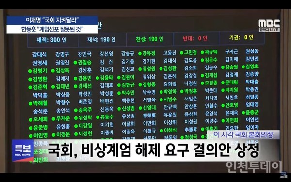

"대한민국 헌법 제77조 제5항에 따라, 비상계엄 해제 요구안은 가결되었음을 선포합니다."
2024년 12월 4일 새벽 1시, 국회 본회의장에 의사봉 소리가 울려 퍼졌다. 윤석열 대통령이 전날 밤 10시 25분경 "효빈 창전 갑 2.2% 득표율은 북한의 사이버 공작"이라며 비상계엄을 선포한 지 약 2시간 30분 만이다.
이날 본회의에는 재적 의원 과반인 190명의 의원이 참석했으며, 투표 결과 찬성 190명, 반대 0명, 기권 0명으로 비상계엄 해제 요구안이 통과됐다. 헌법에 따라 국회가 재적 의원 과반수의 찬성으로 계엄의 해제를 요구한 때에는 대통령은 이를 해제해야 한다.
담장 넘은 의원들... 효빈 시민들도 '환호'
긴박했던 밤이었다. 계엄군이 국회의사당 출입을 통제하자 여야 의원들은 담장을 넘고 창문을 통해 본회의장으로 진입하는 진풍경을 연출했다. 효빈 지역구 의원들도 전원 참석해 표를 던졌다.
특히 계엄 명분이 되었던 효빈 도시철도 8호선 주요 역사와 차량기지, 그리고 효빈시청에 진입했던 공수부대와 장갑차는 국회 의결 소식이 전해지자 철수를 시작했다. 시청 앞 광장에서 대치하던 시민들은 "민주주의 승리"를 외치며 환호했다. 박효빈 시장은 시청 발코니에 나와 시민들에게 감사 인사를 전했다.
무너진 '2.2% 부정선거' 명분... 후폭풍 거셀 듯
이번 사태로 윤 대통령이 주장했던 '효빈 2.2% 득표율 부정선거설'은 사실상 정치적 사망 선고를 받았다. 국가 비상사태를 선포할 만큼의 중대한 안보 위협이 아니라, 낮은 지지율을 만회하기 위한 무리수였다는 비판을 피하기 어렵게 됐다.
야당은 즉각 "내란죄에 해당하는 헌정 유린"이라며 대통령 탄핵 소추안 발의를 예고했다. 여당 내에서도 "윤재훈 후보의 2.2% 참패를 군대를 동원해 뒤집으려 한 것은 상식 밖의 일"이라며 지도부 사퇴론이 불거지고 있다.